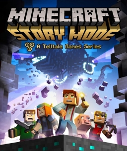
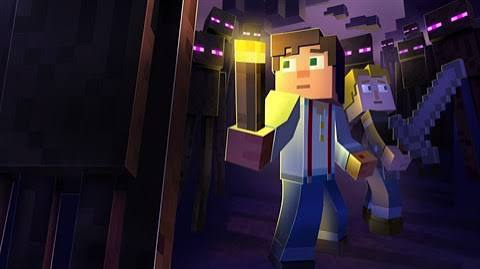
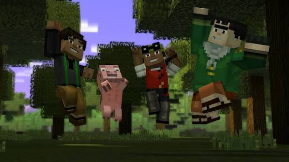

Minecraft: Story Mode ficou marcado por transformar o universo de blocos em uma jornada cheia de escolhas difíceis, traições e sacrifícios reais. Aqui está o resumo focado nos momentos mais marcantes e impactantes da saga:
A jornada começa de forma simples: Jesse e seus amigos são apenas construtores amadores que sonham em vencer uma competição na EnderCon e conhecer a lendária Ordem da Pedra (um grupo de heróis que supostamente salvou o mundo no passado).

O jogo muda de tom drasticamente quando o vilão Ivor cria o Wither Storm. O plano sai de controle e a criatura se transforma em um monstro titânico com três cabeças, tentáculos e feixes de luz que sugam blocos e pessoas, destruindo cidades inteiras. O sentimento de urgência e impotência diante desse "fim do mundo" dita o ritmo da primeira metade do jogo.
• A Farsa dos Heróis: Jesse descobre que a lendária Ordem da Pedra era uma mentira. Eles não derrotaram o Dragão do Fim com bravura; eles usaram um bloco de comando (Command Block) trapaceiro para apagá-lo da existência. Descobrir que os maiores ídolos do mundo eram fraudes abala profundamente os personagens. • A Escolha Cruel (Gabriel ou Petra): Logo no início, o jogo força o jogador a escolher quem salvar dos tentáculos do Wither. Aquele que fica para trás é infectado com a "Murcha" (Wither Sickness), uma doença que consome o personagem aos poucos, gerando momentos de pura angústia. • A Morte de Reuben: O momento mais doloroso e inesquecível do jogo. Na batalha final dentro do Wither Storm, o porquinho de estimação e melhor amigo de Jesse, Reuben, ajuda a entregar a arma final, mas cai de uma altura imensa. Reuben morre nos braços de Jesse, transformando-se em uma costeleta de porco crua. Esse final agridoce humanizou o jogo e levou milhares de jogadores às lágrimas.

Após salvarem o mundo, o grupo fica preso em um corredor infinito de portais interdimensionais. O ápice do perigo acontece na 2ª Temporada com a chegada do Administrador (Romeo), um ser com poderes de "modo criativo" divino que manipula a realidade, assume a aparência de Jesse para destruir sua reputação e força o jogador a fazer escolhas de vida ou morte entre seus companheiros. O sacrifício do Reuben ou a farsa da Ordem da Pedra foi o que mais te marcou? Se quiser, posso detalhar o que acontece com o Ivor após o desastre ou como as suas escolhas mudavam o final da luta contra o Wither Storm!